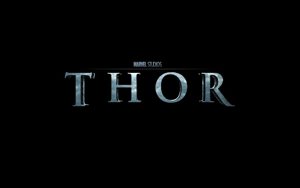

Тор (давньосканд. Þórr, староангл. Þunor, нім. Donar або Donner) — рудоволосий та рудобородий бог грому та блискавки в германській та скандинавській міфології, син Одіна та (тричінародженої) Богині Землі Йорд. В той час як Одін був богом аристократії, Тор є головним чином богом простих людей та часто бере сторону смертних супроти інших богів. Тор є героєм людського роду, захищаючи його від ворогів, хоча він й програв змагання в силі старій жінці Еллі («похилий вік»). Під час Рагнароку Тор вб'є змія Йормунґанда, та загине сам від його отрути. Палац Тора це Більскірнір у Трудгеймі.
Міфи про ТораБільшість міфів, що дійшли до нашого часу, розповідають про подвиги Тора, тому з них, а також з численних написів на монументах, нам відомо, що Тор був найпопулярнішим божеством давніх скандинавів. Локі одного дня літав у подобі сокола, коли його спіймав велетень Ґейррьод. Ґейррьод, який ненавидів Тора, вимагав від Локі, аби той привів його ворога Тора (котрий ще не мав молота та рукавиць) до його палацу. Локі погодився привести Тора у пастку. На шляху до палацу вони зупинились у домі велетунки Ґрід, яка дочекалася, поки Локі покинув кімнату, та розповіла Тору про пастку. Крім того, вона подарувала Торові Мйольнір, рукавиці та пояс. Тор убив Ґейррьода та усіх крижаних велетнів, які мали нещастя опинитися поблизу (включно із дочками Ґейррьода, Ґьяльп та Ґрейп). Донька Тора, Труд, була обіцяна гномові Альвісу, в обмін на що Альвіс зробив зброю богам. Тор придумав план, як не допустити цього. Він сказав Альвісові, що через його малий зріст той повинен довести свою мудрість. Альвіс погодився й Тор загадував йому загадки аж поки не зійшло сонце — всі гноми обертаються на камінь під сонячним промінням, тож Альвіс скам'янів і Труд залишилась неодруженою.